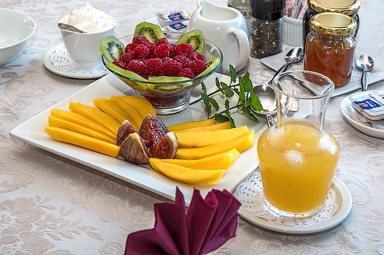

Dagelijkse gezonde maaltijd.
Neem een kijkje in hoe mijn perfecte maaltijd er uit ziet!
voormiddag
Gezond ontbijt
Een goed ontbijt zal je metabolisme en vetverbranding vlugger op gang krijgen.
Op onderstaande fruitschaal of fruitsap kan je klikken. Deze 2 afbeeldingen staan in een apart html bestand.
middag
Eén bord met veel groeten
Zorg ervoor dat je je bord met de helft aan groenten vult.
Een stuk vlees tot max. 150g is meer dan voldoende voor een persoon.
avond
Lichte maaltijd
's Avonds heb je in principe je lichtste maaltijd voor het slapengaan
Bruin brood met beleg is hier voldoende eventueel aangevuld met een lichte yoghurt.
Bij een hongergevoeld achteraf, drink je voldoende water.